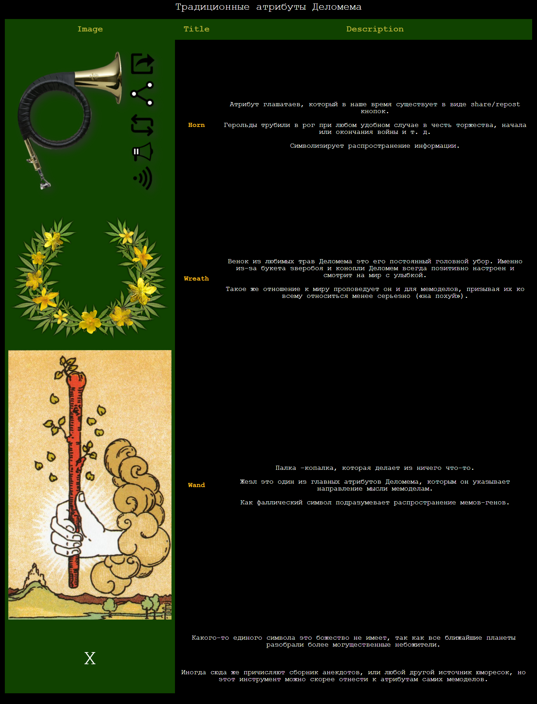

HTML код таблиці:
<table>
<colgroup>
<col bgcolor="#104200"/><col/><col/>
</colgroup>
<caption>Традиционные атрибуты Деломема</caption>
<thead>
<tr class="header">
<th>Image</th>
<th>Title</th>
<th>Description</th>
</tr>
</thead>
<tbody>
<tr>
<td><a href="images/horn.png" target="_blank">
<img src="images/horn.png" target="_blank">
</a>
</td>
<td><a class="tlink" href="https://en.wikipedia.org/wiki/Horn_(instrument)">Horn</a></td>
<td>
<p>Атрибут глашатаев, который в наше время существует в виде share/repost кнопок. </p>
<p>Герольды трубили в рог при любом удобном случае в честь торжества,
начала или окончания войны и т. д.</p>
<p>Символизирует распространение информации.</p>
</td>
</tr>
<tr>
<td><a href="images/zveroboy.png" target="_blank">
<img src="images/zveroboy.png" target="_blank">
</a>
</td>
<td><a class="tlink" href="https://en.wikipedia.org/wiki/Wreath">Wreath</a></td>
<td>
<p>Венок из любимых трав Деломема это его постоянный головной убор.
Именно из-за букета зверобоя и конопли Деломем всегда позитивно настроен и
смотрит на мир с улыбкой.</p>
<p>Такое же отношение к миру проповедует он и для мемоделов,
призывая их ко всему относиться менее серьезно («на похуй»).</p>
</td>
</tr>
<tr>
<td><a href="images/wand.png" target="_blank">
<img src="images/wand.png" target="_blank">
</a>
</td>
<td><a class="tlink" href="https://en.wikipedia.org/wiki/Wand">Wand</a></td>
<td>
<p>Палка –копалка, которая делает из ничего что-то.</p>
<p>Жезл это один из главных атрибутов Деломема,
которым он указывает направление мысли мемоделам.</p>
<p>Как фаллический символ подразумевает распространение мемов-генов.</p>
</td>
</tr>
</tbody>
<tfoot>
<tr>
<td id="x" rowspan="2">X</td>
<td colspan="2">
<p>Какого-то единого символа это божество не имеет,
так как все ближайшие планеты разобрали более могущественные небожители.</p>
</td>
</tr>
<tr>
<td colspan="2">
<p>Иногда сюда же причисляют сборник анекдотов,
или любой другой источник юморесок,
но этот инструмент можно скорее отнести к атрибутам самих мемоделов.</p>
</td>
</tr>
</tfoot>
</table>
Результат:

Теорія:
HTML tables allow web developers to arrange data into rows and columns.
Each table cell is defined by a <td> and a </td> tag.
Each table row starts with a <tr> and end with a </tr> tag.
Sometimes you want your cells to be headers, in those cases use the <th> tag instead of the <td> tag